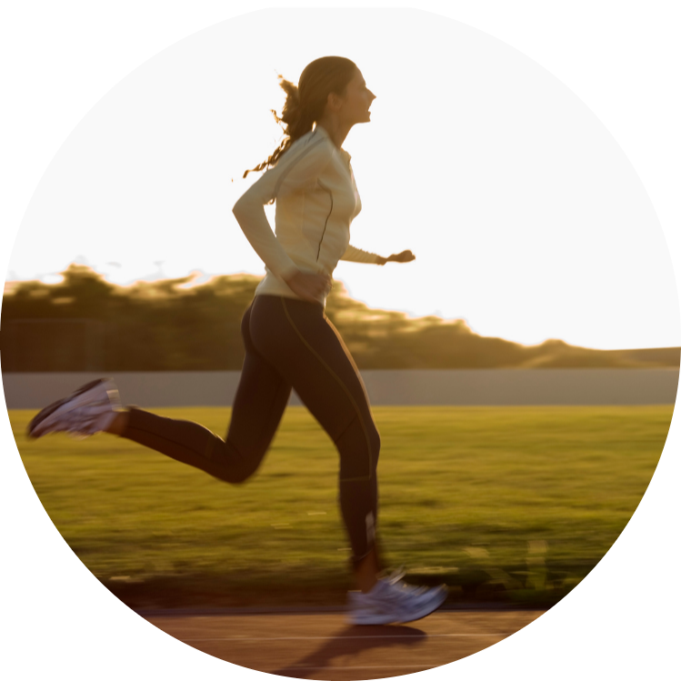

|  |
Alimentação nas CorridasQual a influência da alimentação nas corridas?
É uma dúvida que me acompanhou por muito tempo, mesmo sendo questões simples de se fazer, não é simples de se responder. A resposta para cada uma dessas perguntas é a mesma... Depende!Cada uma das situações levantadas irá influenciar na necessidade, quantidade, tipos e intervalo entre as alimentações. Precisamos entender que quando somos iniciantes, nosso corpo não consegue em muitas situações, mobilizar a quantidade de nutrientes necessários para que se complete a atividade física, a depender da intensidade e duração. Não parece estranho uma pessoa obesa, que tem uma quantidade enorme de energia estocada, não conseguir correr por 6 horas seguidas? Por que essa energia estocada não é transformada em movimento? Tanto essa quanto outras questões podemos abordar mais profundamente em outras oportunidades, dada a profundidade de cada assunto e como é complexa cada questão dessas. Mas vamos a algumas dicas que praticamente serve para qualquer um dos grupos inicialmente. Comece a atividade física hidratado, cuidado especial em dias quentes e secos, água não irá te atrapalhar nas atividades, mas passar sede, fazer atividade desidratado sim, pode tar grandes consequências a sua saúde. Faça uma refeição leve, mas bem leve mesmo uns 5 minutos antes da corrida, leve o bastante para você conseguir correr com o alimento no estômago sem sentir enjoos ou passar mal, ai realmente vai depender de cada pessoa, tem pessoas que conseguem comer um sanduiche e sair para correr sem problemas, para outras pessoas, mais que cinco uvas já começa e incomodar. É mesmo questão de treino. Sim o estômago também pode e deve ser treinado. O alimento deve ter pouca gordura, pois o que irá te ajudar é o açúcar do alimento, que manterá um bom desempenho por muito mais tempo. Quanto mais você for treinando e experimentando alimentos antes ou mesmo durante a atividade física, você descobrirá qual é melhor para você, basicamente corridas com mais de 30min já merecem um reforço alimentar durante a atividade. Então depois dessa dica, experimente comer um pedacinho de doce de leite a cada 20min de atividade de corrida e veja como você se sente! Boa Sorte!! Bons treinos!! |